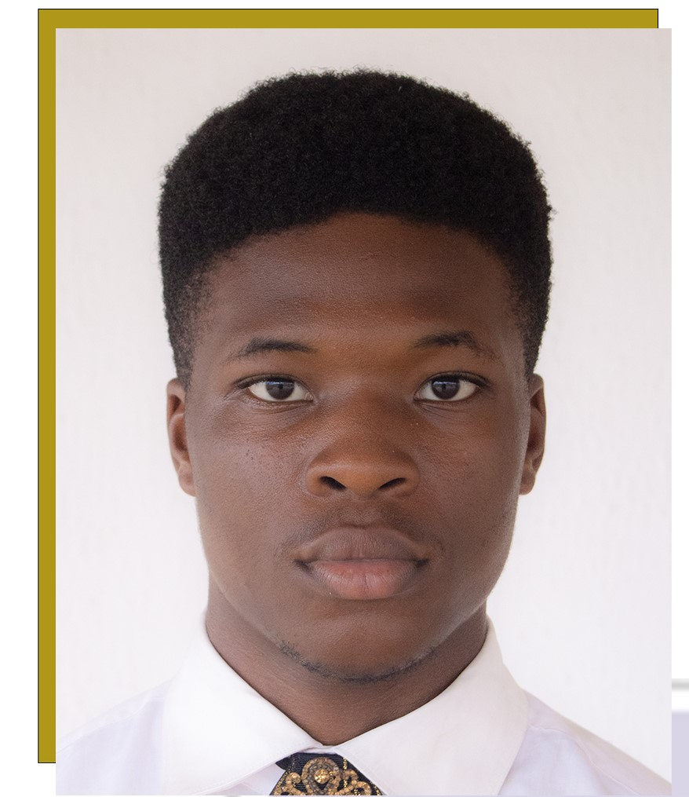

Personal Details
- Name: Kola-Ogunlade Ayomide
- Date Of Birth: 29th of June,2005
- Nationality: Nigerian
- Gender: Male
- Desired Job: Web Development
- Address: 12,Heritage Estate ,Oluyole Extension
Ibadan,Oyo State.
- Telephone: 08164678126
- Email: wavygrapher@gmail.com
- Instagram: Wavy_Revolution
- My GITHUB link: Click here to visit my GITHUB Account
PROFESSIONAL SUMMARY
I am a Full Stack Web developer ,i work more with python and React JS.
I have worked with companies like Amazon,Microsoft ,Apple and Tesla. I am also a Documentary Photographer and Cinematographer ,I have worked with amazing artistes like Davido ,Wizkid ,Rema ,Tywa Savage Even Industries like Mavins records And DMW.
My Skills Summary
- Photography
- Dancing
- Coding
- Film Making